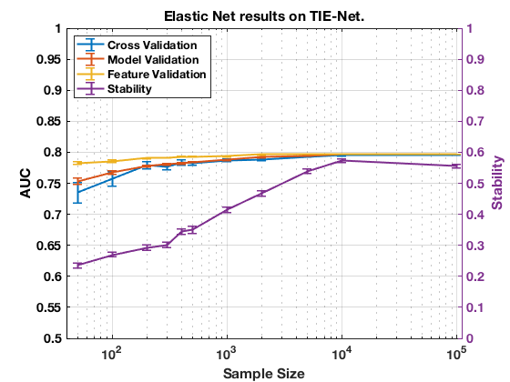

Performance on TIE-Net with Elastic Net.
summary_perf('TieNet', 3)
Figure 3. Elastic Net results on TIE-Net.
__________________________________________

Table 3. Elastic Net results on TIE-Net.
_________________________________________
Sample_Size p_Converge p_Next Cross_Validation_AUC Model_Validation_AUC Feature_Validation_AUC
___________ __________ _________ ____________________ ____________________ ______________________
' 50 ' ' 0.000 ' ' 0.323 ' ' 0.735 +/- 0.016 ' ' 0.753 +/- 0.005 ' ' 0.783 +/- 0.002 '
' 100 ' ' 0.000 ' ' 0.330 ' ' 0.758 +/- 0.012 ' ' 0.768 +/- 0.003 ' ' 0.786 +/- 0.002 '
' 200 ' ' 0.000 ' ' 0.423 ' ' 0.779 +/- 0.006 ' ' 0.778 +/- 0.002 ' ' 0.790 +/- 0.001 '
' 300 ' ' 0.000 ' ' 0.373 ' ' 0.776 +/- 0.004 ' ' 0.781 +/- 0.001 ' ' 0.791 +/- 0.001 '
' 400 ' ' 0.002 ' ' 0.450 ' ' 0.784 +/- 0.004 ' ' 0.782 +/- 0.001 ' ' 0.793 +/- 0.001 '
' 500 ' ' 0.000 ' ' 0.378 ' ' 0.782 +/- 0.003 ' ' 0.784 +/- 0.001 ' ' 0.793 +/- 0.001 '
' 1000 ' ' 0.025 ' ' 0.380 ' ' 0.787 +/- 0.002 ' ' 0.788 +/- 0.001 ' ' 0.794 +/- 0.001 '
' 2000 ' ' 0.053 ' ' 0.350 ' ' 0.789 +/- 0.002 ' ' 0.792 +/- 0.001 ' ' 0.796 +/- 0.000 '
' 5000 ' ' 0.232 ' ' 0.353 ' ' 0.793 +/- 0.001 ' ' 0.795 +/- 0.000 ' ' 0.797 +/- 0.000 '
' 10000 ' ' 0.400 ' ' 0.400 ' ' 0.795 +/- 0.001 ' ' 0.796 +/- 0.000 ' ' 0.797 +/- 0.000 '
' 100000 ' ' NaN ' ' NaN ' ' 0.796 +/- 0.000 ' ' 0.797 +/- 0.000 ' ' 0.797 +/- 0.000 '
Sample_Size Cross_Stability Number_Features Feature_Stability
___________ ___________________ _____________________ ___________________
' 50 ' ' 0.235 +/- 0.008 ' ' 7.196 +/- 0.371 ' ' 0.136 +/- 0.013 '
' 100 ' ' 0.270 +/- 0.008 ' ' 11.006 +/- 0.488 ' ' 0.208 +/- 0.016 '
' 200 ' ' 0.291 +/- 0.008 ' ' 12.872 +/- 0.538 ' ' 0.243 +/- 0.022 '
' 300 ' ' 0.300 +/- 0.010 ' ' 13.182 +/- 0.608 ' ' 0.249 +/- 0.024 '
' 400 ' ' 0.344 +/- 0.010 ' ' 15.834 +/- 0.538 ' ' 0.299 +/- 0.028 '
' 500 ' ' 0.350 +/- 0.012 ' ' 15.758 +/- 0.670 ' ' 0.297 +/- 0.030 '
' 1000 ' ' 0.415 +/- 0.008 ' ' 19.796 +/- 0.438 ' ' 0.374 +/- 0.036 '
' 2000 ' ' 0.468 +/- 0.009 ' ' 22.044 +/- 0.434 ' ' 0.416 +/- 0.042 '
' 5000 ' ' 0.539 +/- 0.007 ' ' 25.264 +/- 0.316 ' ' 0.477 +/- 0.048 '
' 10000 ' ' 0.572 +/- 0.006 ' ' 27.024 +/- 0.340 ' ' 0.510 +/- 0.050 '
' 100000 ' ' 0.557 +/- 0.006 ' ' 25.610 +/- 0.291 ' ' 0.483 +/- 0.048 '